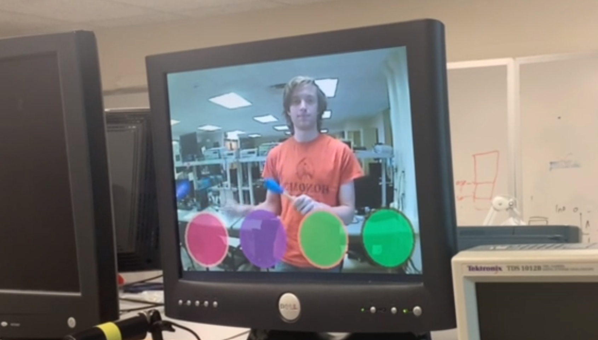
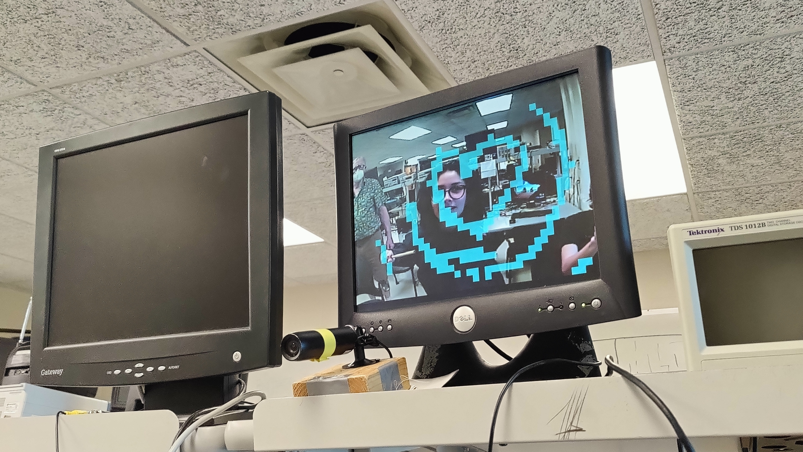

ECE 5760 Final Project: Gesture Based User Interface
Introduction
Zack Nelson (zen3), Raquel Taborga (rmt229), Swapnil Barot (spb228)

Zack Nelson (zen3), Raquel Taborga (rmt229), Swapnil Barot (spb228)
In this project we developed a gesture-based user interface that uses the NTSC camera to track a particular color. This allows a user to hold a wand (or anything of that color) to use as a real-time, touchless stylus. The video streaming and color detection algorithm was implemented in hardware on the provided DE1-SoC FPGA. To demonstrate the versatility of this project, we created three (and a half) mini-games that use this gesture-based user interface.
Our first mini-game was a hands-free drum kit. Using two "drumsticks" with a designated color on the end, the user would see four circles drawn on the VGA display, overlayed atop a mirrored video stream of themselves. They could "hit" the drums circles, and the system would play the corresponding drum sound. This drum game was programmed in C and ran on the HPS system, using the input from the image processing algorithm running on the FPGA. The C program then ran a calculation to see if the drumstick was within the bounds of the drum circle drawn on the screen.
The second mini-game was a hands-free guitar simulation. This worked the same as the drum kit, but loaded different sound files upon startup. This was to show how easily expandable this code was.
The third and final demo for this UI was an etch-a-sketch. Once we had accurate enough color detection, and a correctly configured connection between the HPS and VGA display, we could trace where the drumstick was and draw a filled rectangle at that location on the screen. We used a terminal input to clear the screen.
